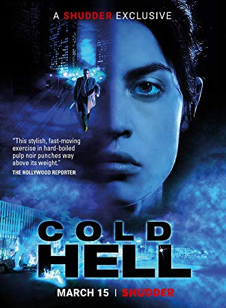
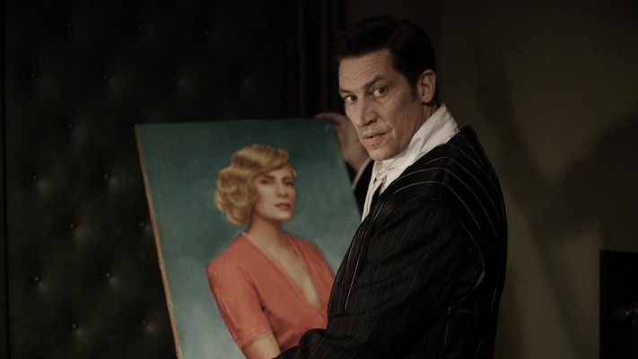
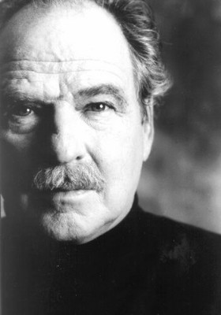
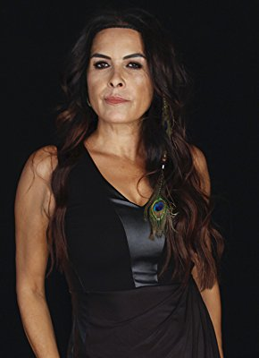

#11012 Die Hölle - Inferno
Alternativ: Cold Hell
 
 IMDB-Wertung: 6.5 / 10
IMDB-Wertung: 6.5 / 10  Metascore: 0
Metascore: 0 
Özge Dogruol is a young woman who left Turkey to find a better life for herself in Austria. She finds work as a cab driver in its capital, Vienna, but frequently faces hostility and intolerance from both her customers and the local police. In order to vent, she takes kickboxing classes and never backs down from a fight, even with police officers, if necessary, to make things right. Meanwhile, the city is plagued by a sadistic serial killer with seemingly religious motives, who targets, tortures and murders a very specific kind of prostitutes. On her way from work one day, Özge witnesses the murder of her next door neighbor, the serial killer's latest victim, and sees the killers face. Unfortunately, he notices Özge as well and tries to kill her. Özge turns to the police, where she's met only with skepticism. Failing to kill her, the killer goes after her extended family in Vienna next, which forces Özge to find a way to stop him herself, and her only ally is a lone police detective ...
Jahr: 2017
Dauer: 91 Minuten
FSK: 16
Land: Deutschland Studio: Splendid FilmTonspuren:
Untertitel: Deutsch,
Auflösung: 720p (1280x536) Größe: 2068 MB
Genre: Action, Thriller, Horror
Regisseur: Stefan Ruzowitzky
Drehbuch: Martin Ambrosch
Soundtrack: Marius Ruhland
Darsteller:
 Violetta Schurawlow als Özge Dogruol
Violetta Schurawlow als Özge Dogruol-  Tobias Moretti als Christian Steiner
- Robert Palfrader als Samir
 Sammy Sheik als Saeed el Hadary
Sammy Sheik als Saeed el Hadary-  Friedrich von Thun als Karl Steiner
 Murathan Muslu als Ilhan
Murathan Muslu als Ilhan- Verena Altenberger als Ranya
- Deniz Cooper als Adem
- Ercan Kesal als Gökhan
-  Nursel Köse als Hande
- Stefan Pohl als Petrovic
- Steffen Anton als Soeren Eckdal
- Stephani Burkhard als Nazan
- Hans-Maria Darnov als Lehrer / teacher
- Erika Deutinger als Frau Öfferl
- Manfred Fuchs als Policeman in civilian
- Kim Girschner als UN Employee
- Rainer Gradischnig als Mechaniker / mechanic
- Susanne Gschwendtner als Ärztin / MD
- Shamil Iliskhanov als Milan
- Edis König als BMW Fahrer / BMW driver
- Liane Lettner als Elegante Dame / Lady
- Carola Pojer als Monika
- Michaela Schausberger als Sabine
- Manuel Sefciuc als Polizist / policeman
- Ahmet Simsek als dünner Rumäne / thin romanian man
- Elif Nisa Uyar als Ada
- Qiufu Yang-Moeller als Krankenschwester / nurse
- Martin Müller als Police Officer (uncredited)
Datei: X:\2017(G-M)\Hölle - Inferno, Die (2017, FSK16, 1280x536).mkv seit 17.04.2019
Festplatte: HD 2017(A-Z)-2018(A-F)
 Es gibt insgesamt 148 Filme in der Gruppe '2017(G-M)'
Es gibt insgesamt 148 Filme in der Gruppe '2017(G-M)'